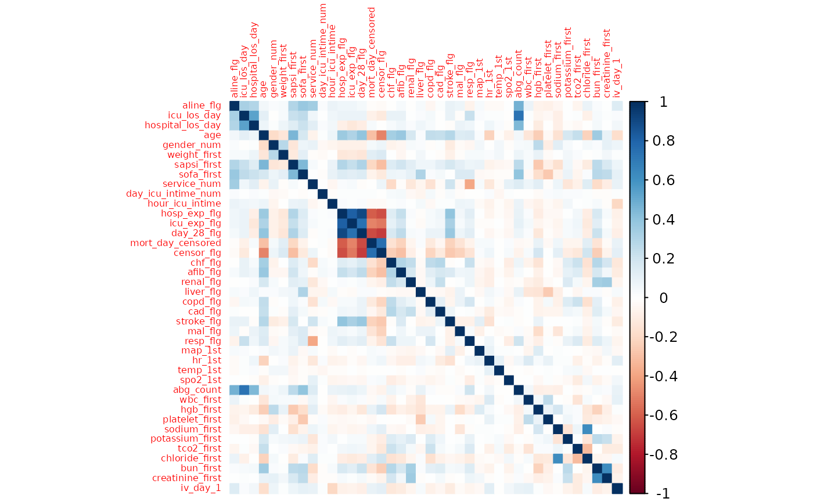

Binary Protected Attributes
fairmetrics.RmdIntroduction
We illustrate the usage of the fairmetrics package
through a case study using a publicly available dataset of 1,776 ICU
patients from the MIMIC-II clinical database, focusing on predicting
28-day mortality and evaluating disparities in model performance across
sex.
The following packages are used for the analysis along with the
fairmetrics package:
# Packages we are using for the analysis
library(dplyr)
library(corrplot)
library(randomForest)
library(pROC)
library(SpecsVerification)
library(kableExtra)
library(naniar)
# Our package
library(fairmetrics)The “Data Preprocessing” section discusses the dataset, the handling
of missing data, model construction and standard predictive model
evaluation through train-test splitting for binary classification. The
“Fairness Evaluation” section shows how to evaluate the model’s fairness
toward binary protected attributes with the fairmetrics
package.
Data Preprocessing
The dataset used in this analysis is the MIMIC II clinical database
[2], which has been previously studied to explore the relationship
between indwelling arterial catheters in hemodynamically stable patients
and respiratory failure in relation to mortality outcomes [3]. It
includes 46 variables which cover demographics and clinical
characteristics (including white blood cell count, heart rate during ICU
stays and others) along with a 28-day mortality indicator
(day_28_flg) for 1,776 patients. The data has been made
publicly available by PhysioNet [4]
and is available in the fairmetrics package as the
mimic dataset.
Handling Missing Data
We first assess the extent of missingness in the dataset. For each
variable, we calculate both the total number and the percentage of
missing values with naniar::miss_var_summary().
# Loading mimic dataset
# (available in fairmetrics)
data("mimic")
missing_data_summary<- naniar::miss_var_summary(mimic, digits= 3)
kableExtra::kable(missing_data_summary, booktabs = TRUE, escape = FALSE) %>%
kableExtra::kable_styling(
latex_options = "hold_position"
)| variable | n_miss | pct_miss |
|---|---|---|
| bmi | 466 | 26.239 |
| po2_first | 186 | 10.473 |
| pco2_first | 186 | 10.473 |
| iv_day_1 | 143 | 8.052 |
| weight_first | 110 | 6.194 |
| sapsi_first | 85 | 4.786 |
| wbc_first | 8 | 0.450 |
| hgb_first | 8 | 0.450 |
| platelet_first | 8 | 0.450 |
| sofa_first | 6 | 0.338 |
| creatinine_first | 6 | 0.338 |
| sodium_first | 5 | 0.282 |
| potassium_first | 5 | 0.282 |
| tco2_first | 5 | 0.282 |
| chloride_first | 5 | 0.282 |
| bun_first | 5 | 0.282 |
| temp_1st | 3 | 0.169 |
| gender_num | 1 | 0.056 |
| aline_flg | 0 | 0.000 |
| icu_los_day | 0 | 0.000 |
| hospital_los_day | 0 | 0.000 |
| age | 0 | 0.000 |
| service_unit | 0 | 0.000 |
| service_num | 0 | 0.000 |
| day_icu_intime | 0 | 0.000 |
| day_icu_intime_num | 0 | 0.000 |
| hour_icu_intime | 0 | 0.000 |
| hosp_exp_flg | 0 | 0.000 |
| icu_exp_flg | 0 | 0.000 |
| day_28_flg | 0 | 0.000 |
| mort_day_censored | 0 | 0.000 |
| censor_flg | 0 | 0.000 |
| sepsis_flg | 0 | 0.000 |
| chf_flg | 0 | 0.000 |
| afib_flg | 0 | 0.000 |
| renal_flg | 0 | 0.000 |
| liver_flg | 0 | 0.000 |
| copd_flg | 0 | 0.000 |
| cad_flg | 0 | 0.000 |
| stroke_flg | 0 | 0.000 |
| mal_flg | 0 | 0.000 |
| resp_flg | 0 | 0.000 |
| map_1st | 0 | 0.000 |
| hr_1st | 0 | 0.000 |
| spo2_1st | 0 | 0.000 |
| abg_count | 0 | 0.000 |
To ensure data quality, the following procedure is applied to handle missing data:
Removal of that variables which had more than 10% missing values. Three variables had more than 10% of missing values: body mass index (
bmi; 26.2%), first partial pressure of oxygen (po2_first; 10.5%), and first partial pressure of carbon dioxide (pco2_first; 10.5%).Remaining missing values are imputed using the median value of the variable which they belong to.
# Remove columns with more than 10% missing values
columns_to_remove <- missing_data_summary %>%
dplyr::filter(pct_miss > 10) %>%
dplyr::pull(variable)
mimic <- dplyr::select(mimic,
-dplyr::one_of(columns_to_remove)
)
# Impute remaining missing values with median
mimic <- mimic %>%
dplyr::mutate(
dplyr::across(
dplyr::where(~any(is.na(.))),
~ifelse(is.na(.), median(., na.rm = TRUE), .)
)
)We additionally remove sepsis_flg column from the
dataset as it contains a single unique value across all observations.
Since this does not provide any useful information for model training,
it is excluded.
Model Building
Before training the model, we further remove variables that are
directly correlated with patient outcomes to prevent data
leakage. In particular, we inspect the correlation matrix of the
numeric features and exclude variables such as the hospital expiration
flag (hosp_exp_flg), the ICU expiration flag
(icu_exp_flg), the mortality censoring day
(mort_day_censored), and the censoring flag
(censor_flg), which are strongly associated patient
outcomes.
# Remove columns that are highly correlated with the outcome variable
corrplot::corrplot(cor(select_if(mimic, is.numeric)), method = "color", tl.cex = 0.5)
mimic <- mimic %>%
dplyr::select(-c("hosp_exp_flg", "icu_exp_flg", "mort_day_censored", "censor_flg"))We split the dataset into a training and testing sets. The first 700 patients are used as the training set and the remaining patients are used as the testing set. The hyperparameters for the random forest (RF) model are set to use 1000 trees and a random sampling of 6 variables at each split, determined by the square root of the number of predictors. After training, the overall area under the receiver operating characteristic curve (AUC) for the model on the test set is 0.90 and the overall accuracy of the model on the test set is 0.88.
# Use 700 labels to train the mimic
train_data <- mimic %>%
dplyr::filter(
dplyr::row_number() <= 700
)
# Fit a random forest model
set.seed(123)
rf_model <- randomForest::randomForest(factor(day_28_flg) ~ ., data = train_data, ntree = 1000)
# Test the model on the remaining data
test_data <- mimic %>%
dplyr::filter(
dplyr::row_number() > 700
)
test_data$pred <- predict(rf_model, newdata = test_data, type = "prob")[,2]
# Check the AUC
roc_obj <- pROC::roc(test_data$day_28_flg, test_data$pred)
#> Setting levels: control = 0, case = 1
#> Setting direction: controls < cases
roc_auc <- pROC::auc(roc_obj)
roc_auc
#> Area under the curve: 0.8971Fairness Evaluation
To evaluate fairness, we use the testing set results to examine
patient gender as a binary protected attribute and 28-day mortality
(day_28_flg) as the outcome of interest.
# Recode gender variable explicitly for readability:
test_data <- test_data %>%
dplyr::mutate(gender = ifelse(gender_num == 1, "Male", "Female"))Since many fairness metrics require binary predictions, we threshold the predicted probabilities using a fixed cutoff. We set a threshold of 0.41 to maintain the overall false positive rate (FPR) at approximately 5%.
# Control the overall false positive rate (FPR) at 5% by setting a threshold.
cut_off <- 0.41
test_data %>%
dplyr::mutate(pred = ifelse(pred > cut_off, 1, 0)) %>%
dplyr::filter(day_28_flg == 0) %>%
dplyr::summarise(fpr = mean(pred))
#> fpr
#> 1 0.05054945To calculate various fairness metrics for the model, we pass our test
data with its predicted results into the
get_fairness_metrics function.
fairness_result <- fairmetrics::get_fairness_metrics(
data = test_data,
outcome = "day_28_flg",
group = "gender",
group2 = "age",
condition = ">=60",
probs = "pred",
cutoff = cut_off
)
kableExtra::kable(fairness_result, booktabs = TRUE, escape = FALSE) %>%
kableExtra::kable_styling(full_width = FALSE) %>%
kableExtra::pack_rows("Independence-based criteria", 1, 2) %>%
kableExtra::pack_rows("Separation-based criteria", 3, 6) %>%
kableExtra::pack_rows("Sufficiency-based criteria", 7, 8) %>%
kableExtra::pack_rows("Other criteria", 9, 11) %>%
kableExtra::kable_styling(
full_width = FALSE,
font_size = 10, # Controls font size manually
latex_options = "hold_position"
)| Metric | Full Metric Name | GroupFemale | GroupMale | Difference | 95% Diff CI | Ratio | 95% Ratio CI |
|---|---|---|---|---|---|---|---|
| Independence-based criteria | |||||||
| PPR | Statistical Parity | 0.17 | 0.08 | 0.09 | [0.05, 0.13] | 2.12 | [1.48, 3.05] |
| PPR | Conditional Statistical Parity (age >=60) | 0.34 | 0.21 | 0.13 | [0.05, 0.21] | 1.62 | [1.18, 2.22] |
| Separation-based criteria | |||||||
| FNR | Equal Opportunity | 0.38 | 0.62 | -0.24 | [-0.39, -0.09] | 0.61 | [0.44, 0.86] |
| FPR | Predictive Equality | 0.08 | 0.03 | 0.05 | [0.02, 0.08] | 2.67 | [1.39, 5.1] |
| Avg. Predicted Prob. | Balance for Positive Class | 0.46 | 0.37 | 0.09 | [0.04, 0.14] | 1.24 | [1.09, 1.41] |
| Avg. Predicted Prob. | Balance for Negative Class | 0.15 | 0.10 | 0.05 | [0.03, 0.07] | 1.50 | [1.29, 1.74] |
| Sufficiency-based criteria | |||||||
| PPV | Positive Predictive Parity | 0.62 | 0.66 | -0.04 | [-0.21, 0.13] | 0.94 | [0.72, 1.23] |
| NPV | Negative Predictive Parity | 0.92 | 0.90 | 0.02 | [-0.15, 0.19] | 1.02 | [0.79, 1.33] |
| Other criteria | |||||||
| Brier Score | Brier Score Parity | 0.09 | 0.08 | 0.01 | [-0.01, 0.03] | 1.12 | [0.88, 1.43] |
| Accuracy | Overall Accuracy Parity | 0.87 | 0.88 | -0.01 | [-0.05, 0.03] | 0.99 | [0.94, 1.04] |
| FN/FP Ratio | Treatment Equality | 1.03 | 3.24 | -2.21 | [-4.5, 0.08] | 0.32 | [0.15, 0.69] |
From the outputted fairness metrics we note:
Independence is likely violated, as evidenced by the statistical parity metric which shows a 9% difference (95% CI: [5%, 13%]) or a ratio of 2.12 (95% CI: [1.49, 3.04]) between females and males. The measures in the independence category indicate that the model predicts a significantly higher mortality rate for females, even after conditioning on age.
With respect to separation, we observe that all metrics show significant disparities. For instance, equal opportunity shows a -24% difference (95% CI: [-39%, -9%]) in false negative rate (FNR) between females and males. This indicates the model is less likely to detect males at risk of mortality compared to females.
On the other hand, the sufficiency criterion is satisfied as predictive parity shows no significant difference between males and females (difference: -4%, 95% CI: [-21%, 13%]; ratio: 0.94, 95% CI: [0.72, 1.23]). This suggests that given the same prediction, the actual mortality rates are similar for both males and females.
Among the additional metrics that assess calibration and discrimination, Brier Score Parity and Overall Accuracy Equality do not show significant disparities. However, Treatment Equality shows a statistically significant difference (difference: –2.21, 95% CI: [–4.35, –0.07]; ratio: 0.32, 95% CI: [0.15, 0.68]), indicating that males have a substantially higher false negative to false positive ratio compared to females. This suggests that male patients are more likely to be missed by the model relative to being incorrectly flagged.
Appendix A: Confidence Interval Construction
The function get_fairness_metrics() computes Wald-type
confidence intervals for both group-specific and disparity metrics using
nonparametric bootstrap. To illustrate the construction of confidence
intervals (CIs), we use the following example involving the false
positive rate
().
Let and denote the estimated and true FPR in group . Then the difference satisfies (e.g., Gronsbell et al., 2018):
We estimate the standard error of using bootstrap resampling within groups, and form a Wald-style confidence interval:
For ratios, such as , we apply a log transformation and use the delta method:
Exponentiation of the bounds yields a confidence interval for the ratio on the original scale:
Appendix B: Practical Fairness Considerations
In the above example, both separation and sufficiency-based fairness criteria are important:
- Separation ensures that patients at true risk are identified across groups, reducing under-detection in specific sub-populations.
- Sufficiency ensures interventions are based solely on predicted need, not protected attributes.
However, 28-day mortality differs by sex (19% for females vs. 14% for males), making it impossible to satisfy multiple fairness criteria simultaneously.
Given this, enforcing independence is likely not advisable in this case, as it could blind the model to true mortality differences. However, the model violates separation, potentially leading to higher false negative rates among male patients and delayed interventions.
See Hort et al. (2022) for strategies to reduce disparities in separation-based metrics.
References
Gao, J. et al. What is Fair? Defining Fairness in Machine Learning for Health. arXiv.org https://arxiv.org/abs/2406.09307 (2024).
Raffa, J. (2016). Clinical data from the MIMIC-II database for a case study on indwelling arterial catheters (version 1.0). PhysioNet. https://doi.org/10.13026/C2NC7F.
Raffa J.D., Ghassemi M., Naumann T., Feng M., Hsu D. (2016) Data Analysis. In: Secondary Analysis of Electronic Health Records. Springer, Cham
Goldberger, A., Amaral, L., Glass, L., Hausdorff, J., Ivanov, P. C., Mark, R., … & Stanley, H. E. (2000). PhysioBank, PhysioToolkit, and PhysioNet: Components of a new research resource for complex physiologic signals. Circulation [Online]. 101 (23), pp. e215–e220.
Hsu, D. J. et al. The association between indwelling arterial catheters and mortality in hemodynamically stable patients with respiratory failure. CHEST Journal 148, 1470–1476 (2015).
Gronsbell, J. L. & Cai, T. Semi-Supervised approaches to efficient evaluation of model prediction performance. Journal of the Royal Statistical Society Series B (Statistical Methodology) 80, 579–594 (2017).
Efron, B. & Tibshirani, R. Bootstrap methods for standard errors, confidence intervals, and other measures of statistical accuracy. Statistical Science 1, (1986).
Hort, M., Chen, Z., Zhang, J. M., Harman, M. & Sarro, F. Bias Mitigation for Machine Learning Classifiers: A Comprehensive survey. arXiv.org https://arxiv.org/abs/2207.07068 (2022).